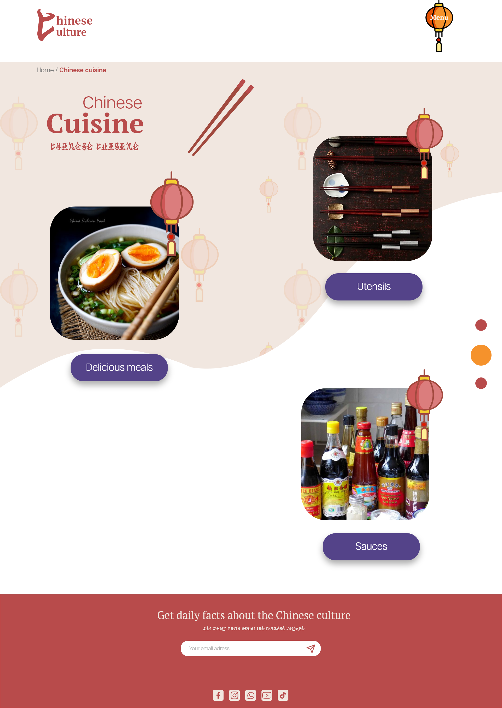

De opdracht
Ik heb een website gemaakt voor mensen die graag wil leren over het Chinese Cultuur. Mijn doel voor deze website is waarde te geven op Chinese producten. Met deze waarde kun je een nieuwe leven inbrengen. Om dit te laten zien heb ik een digitale prototype gemaakt bedoeld voor laptop. Het prototype is gemaakt met Adobe XD en bestaat uit acht pagina. Om het structuur van de pagina te verdelen had ik een sitemap gemaakt. De website bestaat uit verschillende categorieen van de Chinese cultuur. Bijvoorbeeld Chinese muziek, dansstijl, keuken, religie enzovoorts. Ik heb alleen de keuken categorie uitgewerkt en twee subcategorieen met elk een resultatenpagina en een detailpagina. Het keukencategorieen bestond uit verschillende Chinese keukengereien en gerechten.
De eindopdracht

- 